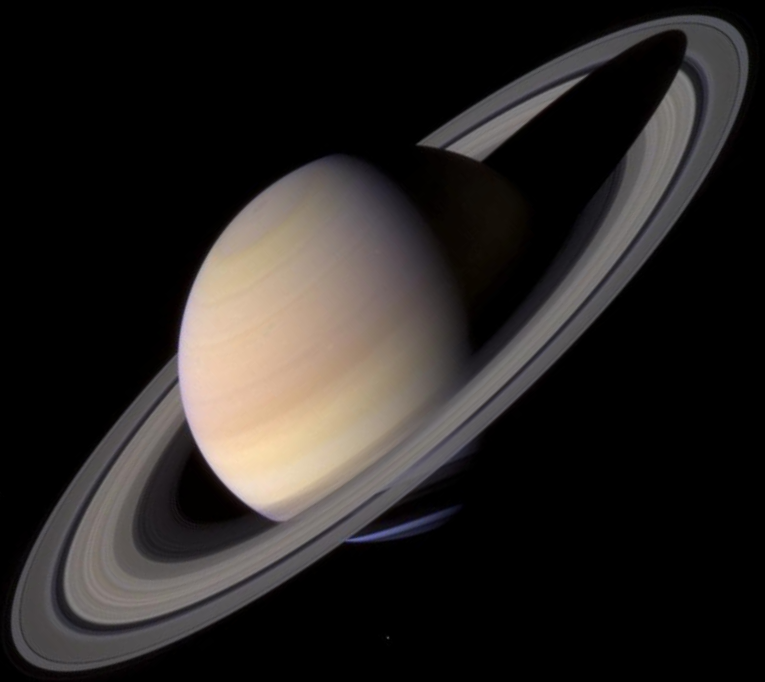
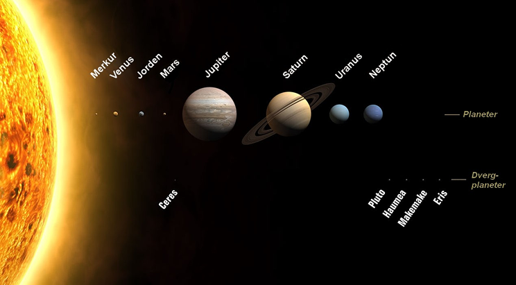
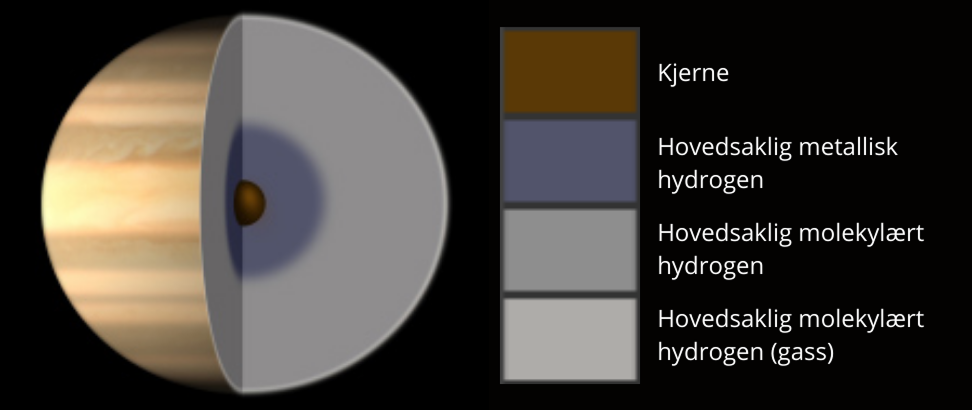
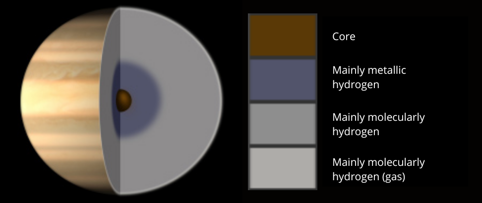

Saturn

“Our solar system is fantastically bizarre. There are worlds with
features we never imagined. Storms larger than planets, moons with
under-surface oceans, lakes of methane, worldlets that swap
places...and that's just at Saturn. “ (Phil Plait)
Planet kategori :
Avstand fra jorden :
Omkrets (ekvator) :
Aksehelning :
Masse :
Tetthet :
Ett døgn :
Ett år :
Gassplanet
Min. : ca. 1,1 mill. km -
Max : ca. 1,6 mill. km
378 675 km
26,72 grader (Jorden : 23,4 grader)
95 ganger Jordens
0,69 g/cm3 - lavere enn vann
10,23 timer
29,42 jordår
Saturn er den sjette planeten i vårt solsystem, oppkalt etter den
romerske guden Saturn, gud for jordbruk og såing. Den er også den nest
største i diameter, rett etter Jupiter, den største planeten i vårt
solsytem. Den er en av 4 gassplaneter hvor de andre er Jupiter, Uranus
og Neptun. Den har sin bane mellom Jupiter og Uranus.

Saturn er velkjent for sitt fantastiske ringsystem. Det var lenge en
oppfattning at det var den eneste planeten i solsytemet vårt som hadde
ringer, men vi vet nå at det er feil. Både Jupiter, Uranus og Neptun
har ringer, men langt ifra så spektakulære og tydelige som Saturns
ringer.
Det er funnet nedtegnede observasjoner av assyriske astronomer
allerede 700 år fvt.
Galileo Galilei
(f. 1564 - d. 1642) var den første som observerte ringene, men trodde
da at han så var to måner og senere ett trippel planetsystem.
Chrisiaan Huygens
(f. 1629 - d. 1695), en nederlansk matematiker og fysiker. var den
første som oppdaget at dette faktisk var ringer i 1655.

Saturn består hovedsakelig av gass, for det meste hydrogen og helium.
De fleste fysiske modeller antar den har en fast kjerne, sannsynligvis
av stein. Etter vår mening, så er det ikke mulig for liv å eksistere
på Saturn. Den er også sterkt flattrykt, pga. den raske rotasjonen og
har en tetthet som er lavere enn vann. Temperaturen går fra +12 000
grader Celcius til -170 grader Celcius. Nordlys er blitt observert på
Saturn og magnetfeltet er ca. 578 ganger så kraftig som Jordens.
"When you see it floating in the eyepiece of your telescope, you feel
as if you've uncovered mystery in the cosmos." -
Carolyn Porco
about Saturn

Saturn
“Our solar system is fantastically bizarre. There are worlds with
features we never imagined. Storms larger than planets, moons with
under-surface oceans, lakes of methane, worldlets that swap
places...and that's just at Saturn. “ (Phil Plait)
Planet category :
Distance from earth :
Circumference (equator) :
Axis inclination :
Mass :
Density :
One day :
One Year :
Gassplanet
Min. : ca. 1,1 mill. km -
Max : ca. 1,6 mill. km
378 675 km
26,72 degrees (Earth : 23,4 degrees)
95 times Earth's
0,69 g/cm3 - lower than water
10,23 hours
29,42 Earth years
Saturn is the sixth planet in our solar system, named after the Roman
god Saturn, god of agriculture and sowing. It is also the second
largest in diameter, right after Jupiter, the largest planet in our
solar system. It is one of 4 gas planets, the others being Jupiter,
Uranus and Neptune. It has its orbit between Jupiter and Uranus.
Saturn is well known for its amazing ring system. It was long believed
that it was the only planet in our solar system to have rings, but we
now know that this is wrong. Jupiter, Uranus and Neptune all have
rings, but they are nowhere near as spectacular and clear as Saturn's
rings.
Recorded observations by Assyrian astronomers have been found as early
as 700 BCE.
Galileo Galilei
(b. 1564 - d. 1642) was the first to observe the rings, but then
thought that he saw two moons and later a triple planetary system.
Chrisiaan Huygens
(b. 1629 - d. 1695), a Dutch mathematician and physicist. was the
first to discover that these were actually rings in 1655.

Saturn is composed mainly of gas, mostly hydrogen and helium. Most
physical models assume it has a solid core, probably made of rock. In
our opinion, it is not possible for life to exist on Saturn. It is
also very flattened, due to its rapid rotation, and has a density
lower than water. The temperature ranges from +12,000 degrees Celsius
to -170 degrees Celsius. Northern lights have been observed on Saturn
and the magnetic field is about 578 times as strong as Earth's.
"When you see it floating in the eyepiece of your telescope, you feel
as if you've uncovered mystery in the cosmos." -
Carolyn Porco
about Saturn